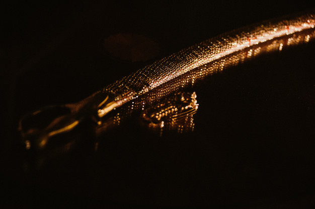

الحروب الإسلامية
أشهر الحروب الإسلامية

وقعت أحداث غزوة بدر في السنة الثانية للهجرة، عن طريق اعتراض الصحابة لقافلة قريش المتّجهة إلى الشام؛ لاسترجاع أموالهم التي قامت قريش بالاستيلاء عليها
من أقوى المعارك التي خاضها المسلمون في السنة الثامنة من الهجرة، وقد تألّف جيش المسلمين من ثلاثة آلاف مقاتلٍ مسلمٍ، يقابله مئتا ألف محاربٍ من المشركين
حدثت في 10 محرم سنة 61 للهجرة والتي تصادف 12 أكتوبر سنة 680م بين أتباع الحسين بن علي بن أبي طالب رابع الخلفاء الراشدين وجيش تابع للخليفة الأموي يزيد بن معاوية ابن الخليفة الأموي الأول معاوية بن أبي سفيان
شكَّل فتح القسطنطينيَّة خاتمة المُحاولات الإسلاميَّة لضم هذه المدينة لحظيرة الخلافة، والتي بدأت مُنذ أوائل العهد الأُمويّ خلال خلافة مُعاوية بن أبي سُفيان واستمرَّت خلال العهد العبَّاسي، إلى أن تكللت بالنجاح في العهد العُثماني
معركة دارت في رمضان 114 هـ/أكتوبر 732م في موقع يقع بين مدينتي بواتييه وتور الفرنسيتين، وكانت بين قوات مسلمين تحت لواء الدولة الأموية، بقيادة والي الأندلس عبد الرحمن الغافقي من جهة، وقوات الفرنجة والبورغنديين بقيادة شارل مارتل من جهة أخرى، وانتهت بانتصار قوات الفرنجة وانسحاب جيش المسلمين بعد مقتل قائده عبد الرحمن الغافقي
دارت رحاها سنة 699 هـ /1299م بين المماليك بقيادة الناصر محمد بن قلاوون ومغول الإلخانات بقيادة محمود غازان شمال شرق حمص بسوريا، وانتهت بهزيمة ثقيلة للمسلمين بسبب قلة عددهم ونقص في الاستعدادات، ومع ذلك فإنهم أوقعوا خسائر فادحة بالجيش المغولي. بعد موت جنكيز خان سنة 1227م قسمت إمبراطورية المغول بين أبنائه الأربعة
معركة وقعت في 17 يوليو 1134 م/23 رمضان 528 هـ تحت أسوار إفراغة في الثغر الأعلى، بين قوات مملكة أراغون بقيادة الملك ألفونسو الأول والجيوش المرابطية التي أتت لنجدة بلدة إفراغة المحاصرة من قبل الملك ألفونسو الأول، وأسفرت عن انتصار المرابطين، ووفاة ألفونسو الأول حسرةً بعد المعركة بوقت قصير
معركة نشبت في 24 أكتوبر 869 بالقرب من البصرة. كانت إحدى المعارك الرئيسية الأولى لثورة الزنج التي جرت بعد أقل من شهرين على اندلاع الثورة
أحد معارك سقوط الأندلس، وقد قعت بين قوتي رودريغو دياز دي فيفار المعروف باسم "إل سيد"، متحالفا مع بيدرو الأول ملك أراغون ونافارا، ضد قوات المرابطين بقيادة محمد بن تاشفين. وأسفرت عن انتصار مملكة أراغون ومملكة بلنسية.